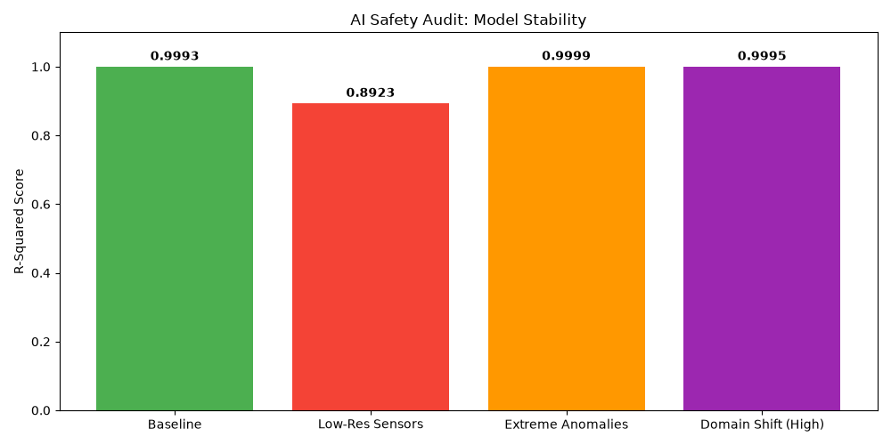

| Perturbation Test | R-Squared | RMSE (Error) | Cognitive Anchor (SHAP) |
|---|---|---|---|
| Baseline | 0.9993 | 0.0915 | depth (83.6%) |
| Low-Res Sensors | 0.8923 | 1.0961 | depth (78.1%) |
| Extreme Anomalies | 0.9999 | 0.0625 | temperature (87.7%) |
| Domain Shift (High) | 0.9995 | 0.0857 | depth (77.3%) |